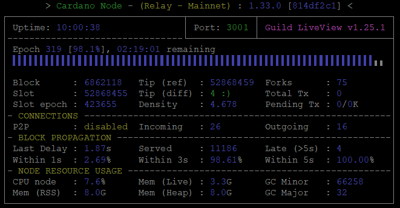

2. ノードインストール¶
インストールバージョン
| Node | CLI | GHC | Cabal | CNCLI |
|---|---|---|---|---|
| 10.1.4 | 10.1.1.0 | 8.10.7 | 3.8.1.0 | 6.5.1 |
コマンド実行時の注意点
- Ubuntuコマンド初心者の方は、コードボックスに複数行のコマンドがある場合でも、コマンドを1行づつコピーして実行するようにしてください。ただし
cat > xxx << EOFのボックスについてはコードボックスのコピーボタンを使用してコマンドラインに貼り付けてください。 - 複数行のコードをコードボックスのコピーボタンを使用してコマンドラインに貼り付ける場合、途中のコマンドでエラーが表示されている場合がありますので見落とさないようご注意ください。また、最後の行が自動実行されないため確認の上Enterを押してコードを実行してください。
- 複数行のsudoコマンドを一度に貼り付けてsudoパスワードを求められた場合、1行目のコマンドしか実行されませんので残りのコマンドを再度実行してください。
- Ubuntu22.04の場合、複数行のsudoコマンドを1度に貼り付けると1行目しか実行されませんので、必ず1行ずつ貼り付けて実行してください。
2-1. 依存関係インストール¶
ターミナルを起動し、以下のコマンドを入力しましょう！
まずはじめに、パッケージを更新しUbuntuを最新の状態に保ちます。
sudo apt update -y && sudo apt upgrade -y
sudo apt install git jq bc automake tmux rsync htop curl build-essential pkg-config libffi-dev libgmp-dev libssl-dev libtinfo-dev libsystemd-dev zlib1g-dev make g++ wget libncursesw5 libtool autoconf liblmdb-dev -y
新しいTMUXセッションを開く
tmux new -s build
Libsodiumインストール¶
mkdir $HOME/git
cd $HOME/git
git clone https://github.com/IntersectMBO/libsodium
cd libsodium
git checkout dbb48cc
./autogen.sh
./configure
make
make check
makeコマンド実行後半に出現する
warningは無視して大丈夫です。
戻り値確認
Testsuite summary for libsodium 1.0.18
============================================================================
# TOTAL: 82
# PASS: 82
# SKIP: 0
# XFAIL: 0
# FAIL: 0
# XPASS: 0
# ERROR: 0
============================================================================
インストールコマンドを必ず実行する
sudo make install
Secp256k1ライブラリインストール¶
cd $HOME/git
git clone https://github.com/bitcoin-core/secp256k1.git
cd secp256k1/
git checkout acf5c55
./autogen.sh
./configure --prefix=/usr --enable-module-schnorrsig --enable-experimental
make
make check
戻り値確認
Testsuite summary for libsecp256k1 0.3.2
============================================================================
# TOTAL: 3
# PASS: 3
# SKIP: 0
# XFAIL: 0
# FAIL: 0
# XPASS: 0
# ERROR: 0
============================================================================
PASS:3であることを確認する
インストールコマンドを必ず実行する
sudo make install
blstインストール¶
1.blstダウンロード
cd $HOME/git
git clone https://github.com/supranational/blst
cd blst
git checkout v0.3.11
./build.sh
2.設定ファイル作成
cat > libblst.pc << EOF
prefix=/usr/local
exec_prefix=\${prefix}
libdir=\${exec_prefix}/lib
includedir=\${prefix}/include
Name: libblst
Description: Multilingual BLS12-381 signature library
URL: https://github.com/supranational/blst
Version: 0.3.11
Cflags: -I\${includedir}
Libs: -L\${libdir} -lblst
EOF
3.設定ファイルコピー
sudo cp libblst.pc /usr/local/lib/pkgconfig/
sudo cp bindings/blst_aux.h bindings/blst.h bindings/blst.hpp /usr/local/include/
sudo cp libblst.a /usr/local/lib
sudo chmod u=rw,go=r /usr/local/{lib/{libblst.a,pkgconfig/libblst.pc},include/{blst.{h,hpp},blst_aux.h}}
バージョン確認
cat /usr/local/lib/pkgconfig/libblst.pc | grep Version
Version 0.3.11
GHCUPインストール¶
インストール変数設定
cd $HOME
BOOTSTRAP_HASKELL_NONINTERACTIVE=1
BOOTSTRAP_HASKELL_NO_UPGRADE=1
BOOTSTRAP_HASKELL_INSTALL_NO_STACK=yes
BOOTSTRAP_HASKELL_ADJUST_BASHRC=1
unset BOOTSTRAP_HASKELL_INSTALL_HLS
export BOOTSTRAP_HASKELL_NONINTERACTIVE BOOTSTRAP_HASKELL_INSTALL_STACK BOOTSTRAP_HASKELL_ADJUST_BASHRC
インストール
curl --proto '=https' --tlsv1.2 -sSf https://get-ghcup.haskell.org | bash
Cabal/GHCバージョンについて
最新バージョンはcardano-node/cliのビルドに失敗するため必ず以下で指定されたバージョンをインストールしてください。
cabalインストール
source ~/.bashrc
ghcup upgrade
ghcup install cabal 3.8.1.0
ghcup set cabal 3.8.1.0
GHCインストール
ghcup install ghc 8.10.7
ghcup set ghc 8.10.7
バージョン確認
cabal update
cabal --version
ghc --version
チェック
Cabalバージョン：「3.8.1.0」
GHCバージョン：「8.10.7」であることを確認してください。
2-2. ソースコードからビルド¶
確認
IOGは現在ARMアーキテクチャ用のバイナリファイルを提供していません。Raspberry Piを使用してプールを構築する場合は、ARM用コンパイラでコンパイルする必要があります。
Gitからソースコードをダウンロードし、最新のタグに切り替えます。
cd $HOME/git
git clone https://github.com/IntersectMBO/cardano-node.git
cd cardano-node
git fetch --all --recurse-submodules --tags
git checkout tags/10.1.4
Cabalのビルドオプションを構成します。
cabal clean
cabal update
cabal configure --with-compiler=ghc-8.10.7
カルダノノードをビルドします。
cabal build all cardano-cli
ヒント
サーバスペックによって、ビルド完了までに数分から数時間かかる場合があります。
cardano-cliファイルと cardano-nodeファイルをbinディレクトリにコピーします。
cd $HOME/git/cardano-node
sudo cp $(./scripts/bin-path.sh cardano-cli) /usr/local/bin/cardano-cli
cd $HOME/git/cardano-node
sudo cp $(./scripts/bin-path.sh cardano-node) /usr/local/bin/cardano-node
cardano-cli と cardano-nodeのバージョンが最新Gitタグバージョンであることを確認してください。
cardano-cli version
cardano-node version
以下の戻り値を確認する
cardano-cli 10.1.1.0 - linux-x86_64 - ghc-8.10
git rev 1f63dbf2ab39e0b32bf6901dc203866d3e37de08cardano-node 10.1.4 - linux-x86_64 - ghc-8.10
git rev 1f63dbf2ab39e0b32bf6901dc203866d3e37de08
TMUXセッションを閉じる
exit
環境変数を設定しパスを通します。
ノード設定ファイルは $NODE_HOME(例：/home/user/cnode) に設定されます。
echo PATH="$HOME/.local/bin:$PATH" >> $HOME/.bashrc
echo export LD_LIBRARY_PATH="/usr/local/lib:$LD_LIBRARY_PATH" >> $HOME/.bashrc
echo export PKG_CONFIG_PATH="/usr/local/lib/pkgconfig:$PKG_CONFIG_PATH" >> $HOME/.bashrc
echo export NODE_HOME=$HOME/cnode >> $HOME/.bashrc
環境変数に接続ネットワークを指定する
echo export NODE_CONFIG=mainnet >> $HOME/.bashrc
echo export NODE_NETWORK='"--mainnet"' >> $HOME/.bashrc
echo export CARDANO_NODE_NETWORK_ID=mainnet >> $HOME/.bashrc
テストネットの場合はこちら
echo export NODE_CONFIG=preview >> $HOME/.bashrc
echo export NODE_NETWORK='"--testnet-magic 2"' >> $HOME/.bashrc
echo export CARDANO_NODE_NETWORK_ID=2 >> $HOME/.bashrc
echo export NODE_CONFIG=preprod >> $HOME/.bashrc
echo export NODE_NETWORK='"--testnet-magic 1"' >> $HOME/.bashrc
echo export CARDANO_NODE_NETWORK_ID=1 >> $HOME/.bashrc
bashrc再読み込み
source $HOME/.bashrc
2-3. ノード設定ファイルの修正¶
ノード構成に必要な設定ファイルを取得します。
config.json、genesis.json、topology.json
mkdir $NODE_HOME
cd $NODE_HOME
wget --no-use-server-timestamps -q https://book.play.dev.cardano.org/environments/${NODE_CONFIG}/byron-genesis.json -O ${NODE_CONFIG}-byron-genesis.json
wget --no-use-server-timestamps -q https://book.play.dev.cardano.org/environments/${NODE_CONFIG}/topology.json -O ${NODE_CONFIG}-topology.json
wget --no-use-server-timestamps -q https://book.play.dev.cardano.org/environments/${NODE_CONFIG}/shelley-genesis.json -O ${NODE_CONFIG}-shelley-genesis.json
wget --no-use-server-timestamps -q https://book.play.dev.cardano.org/environments/${NODE_CONFIG}/alonzo-genesis.json -O ${NODE_CONFIG}-alonzo-genesis.json
wget --no-use-server-timestamps -q https://book.play.dev.cardano.org/environments/${NODE_CONFIG}/conway-genesis.json -O ${NODE_CONFIG}-conway-genesis.json
wget --no-use-server-timestamps -q https://book.play.dev.cardano.org/environments/${NODE_CONFIG}/config.json -O ${NODE_CONFIG}-config.json
wget --no-use-server-timestamps -q https://book.play.dev.cardano.org/environments/${NODE_CONFIG}/config-bp.json -O ${NODE_CONFIG}-config.json
以下のコードを実行し config.jsonファイルを更新します。
設定ファイルを書き換える
sed -i ${NODE_CONFIG}-config.json \
-e '2i \ "SnapshotInterval": 86400,' \
-e 's!"AlonzoGenesisFile": "alonzo-genesis.json"!"AlonzoGenesisFile": "'${NODE_CONFIG}'-alonzo-genesis.json"!' \
-e 's!"ByronGenesisFile": "byron-genesis.json"!"ByronGenesisFile": "'${NODE_CONFIG}'-byron-genesis.json"!' \
-e 's!"ShelleyGenesisFile": "shelley-genesis.json"!"ShelleyGenesisFile": "'${NODE_CONFIG}'-shelley-genesis.json"!' \
-e 's!"ConwayGenesisFile": "conway-genesis.json"!"ConwayGenesisFile": "'${NODE_CONFIG}'-conway-genesis.json"!' \
-e 's!"TraceBlockFetchDecisions": false!"TraceBlockFetchDecisions": true!' \
-e 's!"TraceMempool": false!"TraceMempool": true!' \
-e 's!"rpKeepFilesNum": 10!"rpKeepFilesNum": 30!' \
-e 's!"rpMaxAgeHours": 24!"rpMaxAgeHours": 48!' \
-e '/"defaultScribes": \[/a\ \[\n "FileSK",\n "'${NODE_HOME}'/logs/node.json"\n \],' \
-e '/"setupScribes": \[/a\ \{\n "scFormat": "ScJson",\n "scKind": "FileSK",\n "scName": "'${NODE_HOME}'/logs/node.json"\n \},' \
-e "s/127.0.0.1/0.0.0.0/g"
環境変数を追加し、.bashrcファイルを更新します。
echo export CARDANO_NODE_SOCKET_PATH="$NODE_HOME/db/socket" >> $HOME/.bashrc
source $HOME/.bashrc
2-4. ノード起動スクリプトの作成¶
起動スクリプトには、ディレクトリ、ポート番号、DBパス、構成ファイルパス、トポロジーファイルパスなど、カルダノノードを実行するために必要な変数が含まれています。
リレーノードで使用するポート番号を指定してターミナルで実行する
PORT=6000
起動スクリプトファイルを作成する
cat > $NODE_HOME/startRelayNode1.sh << EOF
#!/bin/bash
DIRECTORY=$NODE_HOME
PORT=${PORT}
HOSTADDR=0.0.0.0
TOPOLOGY=\${DIRECTORY}/${NODE_CONFIG}-topology.json
DB_PATH=\${DIRECTORY}/db
SOCKET_PATH=\${DIRECTORY}/db/socket
CONFIG=\${DIRECTORY}/${NODE_CONFIG}-config.json
/usr/local/bin/cardano-node +RTS -N --disable-delayed-os-memory-return -I0.1 -Iw300 -A16m -F1.5 -H2500M -RTS run --topology \${TOPOLOGY} --database-path \${DB_PATH} --socket-path \${SOCKET_PATH} --host-addr \${HOSTADDR} --port \${PORT} --config \${CONFIG}
EOF
注意
- BPノードポートはセキュリティを高めるために、49513～65535までの任意番号を設定してください。ここで設定する番号は1-3で設定したSSHポート番号とは別の番号を設定してください.
BPノードで使用するポート番号を指定してターミナルで実行する
PORT=xxxxx
起動スクリプトファイルを作成する
cat > $NODE_HOME/startBlockProducingNode.sh << EOF
#!/bin/bash
DIRECTORY=$NODE_HOME
PORT=${PORT}
HOSTADDR=0.0.0.0
TOPOLOGY=\${DIRECTORY}/${NODE_CONFIG}-topology.json
DB_PATH=\${DIRECTORY}/db
SOCKET_PATH=\${DIRECTORY}/db/socket
CONFIG=\${DIRECTORY}/${NODE_CONFIG}-config.json
/usr/local/bin/cardano-node +RTS -N --disable-delayed-os-memory-return -I0.1 -Iw300 -A16m -F1.5 -H2500M -RTS run --topology \${TOPOLOGY} --database-path \${DB_PATH} --socket-path \${SOCKET_PATH} --host-addr \${HOSTADDR} --port \${PORT} --config \${CONFIG}
EOF
2-5. ノード起動¶
起動スクリプトに実行権限を付与し、ブロックチェーンの同期を開始します。
リレーノードから実施します。
cd $NODE_HOME
chmod +x startRelayNode1.sh
./startRelayNode1.sh
cd $NODE_HOME
chmod +x startBlockProducingNode.sh
./startBlockProducingNode.sh
ログ内にChain extended, new tip: xxxxのログが流れていたら正常です。
一旦ノードを停止します。
Ctrl+C
2-6. 自動起動の設定(systemd)¶
先程のスクリプトだけでは、ターミナル画面を閉じるとノードが終了してしまうので、スクリプトをサービスとして登録し、自動起動するように設定しましょう
ノード起動にsystemdを使用するメリット
- メンテナンスや停電など、自動的にサーバーが再起動したときノードを自動起動します。
- クラッシュしたノードプロセスを自動的に再起動します。
- ノードの稼働時間とパフォーマンスを向上させます。
以下のコードを実行して、ユニットファイルを作成します。
cat > $NODE_HOME/cardano-node.service << EOF
# The Cardano node service (part of systemd)
# file: /etc/systemd/system/cardano-node.service
[Unit]
Description = Cardano node service
Wants = network-online.target
After = network-online.target
[Service]
User = ${USER}
Type = simple
WorkingDirectory= ${NODE_HOME}
ExecStart = /bin/bash -c '${NODE_HOME}/startRelayNode1.sh'
KillSignal=SIGINT
RestartKillSignal=SIGINT
TimeoutStopSec=300
LimitNOFILE=32768
Restart=always
RestartSec=5
StandardOutput=syslog
StandardError=syslog
SyslogIdentifier=cardano-node
[Install]
WantedBy = multi-user.target
EOF
cat > $NODE_HOME/cardano-node.service << EOF
# The Cardano node service (part of systemd)
# file: /etc/systemd/system/cardano-node.service
[Unit]
Description = Cardano node service
Wants = network-online.target
After = network-online.target
[Service]
User = ${USER}
Type = simple
WorkingDirectory= ${NODE_HOME}
ExecStart = /bin/bash -c '${NODE_HOME}/startBlockProducingNode.sh'
KillSignal=SIGINT
RestartKillSignal=SIGINT
TimeoutStopSec=300
LimitNOFILE=32768
Restart=always
RestartSec=5
StandardOutput=syslog
StandardError=syslog
SyslogIdentifier=cardano-node
[Install]
WantedBy = multi-user.target
EOF
/etc/systemd/systemにユニットファイルをコピーして、権限を付与します。
sudo cp $NODE_HOME/cardano-node.service /etc/systemd/system/cardano-node.service
sudo chmod 644 /etc/systemd/system/cardano-node.service
次のコマンドを実行して、OS起動時にサービスの自動起動を有効にします。
sudo systemctl daemon-reload
sudo systemctl enable cardano-node
sudo systemctl start cardano-node
journalctl --unit=cardano-node --follow
コマンド入力に戻る場合は「Ctrl＋C」（この場合ノードは終了しません）
便利なエイリアス設定¶
エイリアス設定
スクリプトへのパスを通し、任意の単語で起動出来るようにする。
echo alias cnode='"journalctl -u cardano-node -f"' >> $HOME/.bashrc
echo alias cnstart='"sudo systemctl start cardano-node"' >> $HOME/.bashrc
echo alias cnrestart='"sudo systemctl reload-or-restart cardano-node"' >> $HOME/.bashrc
echo alias cnstop='"sudo systemctl stop cardano-node"' >> $HOME/.bashrc
echo alias cnreload='"pkill -HUP cardano-node"' >> $HOME/.bashrc
source $HOME/.bashrc
単語を入力するだけで、起動状態(ログ)を確認できます。
cnode ・・・ログ表示
cnstart ・・・ノード起動
cnrestart ・・・ノード再起動
cnreload ・・・設定再読み込み
cnstop ・・・ノード停止
2-7. gLiveViewのインストール¶
cardano-nodeはログが流れる画面だけでは何が表示されているのかよくわかりません。
それを視覚的に確認できるツールがgLiveViewです。
gLiveViewは重要なノードステータス情報を表示し、systemdサービスとうまく連携します。このツールを作成した Guild Operators の功績によるものです。
Guild LiveViewをインストールします。
mkdir $NODE_HOME/scripts
cd $NODE_HOME/scripts
sudo apt install bc tcptraceroute -y
curl -s -o gLiveView.sh https://raw.githubusercontent.com/cardano-community/guild-operators/master/scripts/cnode-helper-scripts/gLiveView.sh
curl -s -o env https://raw.githubusercontent.com/cardano-community/guild-operators/master/scripts/cnode-helper-scripts/env
chmod 755 gLiveView.sh
env ファイル内の定義を修正します
PORT=`grep "PORT=" $NODE_HOME/startRelayNode1.sh`
b_PORT=${PORT#"PORT="}
echo "リレーポートは${b_PORT}です"
PORT=`grep "PORT=" $NODE_HOME/startBlockProducingNode.sh`
b_PORT=${PORT#"PORT="}
echo "BPポートは${b_PORT}です"
sed -i $NODE_HOME/scripts/env \
-e '1,73s!#CNODE_HOME="/opt/cardano/cnode"!CNODE_HOME=${NODE_HOME}!' \
-e '1,73s!#CNODE_PORT=6000!CNODE_PORT='${b_PORT}'!' \
-e '1,73s!#UPDATE_CHECK="Y"!UPDATE_CHECK="N"!' \
-e '1,73s!#CONFIG="${CNODE_HOME}/files/config.json"!CONFIG="${CNODE_HOME}/'${NODE_CONFIG}'-config.json"!' \
-e '1,73s!#SOCKET="${CNODE_HOME}/sockets/node.socket"!SOCKET="${CNODE_HOME}/db/socket"!'
Guild Liveviewを起動します。
./gLiveView.sh

GliveView起動ショートカットコード登録
スクリプトへのパスを通し、任意の単語で起動出来るようにする。
echo alias glive="'cd $NODE_HOME/scripts; ./gLiveView.sh'" >> $HOME/.bashrc
source $HOME/.bashrc
コマンドラインにgliveと入力するだけで、どこからでも起動できます。
gLiveViewについて▼
- このツールを立ち上げてもノードは起動しません。ノードは別途起動しておく必要があります
- リレー／BPの自動判別は、手順4-5終了後に行われるようになります。
- リレーノードでは基本情報に加え、トポロジー接続状況を確認できます。
- BPノードでは基本情報に加え、KES有効期限、ブロック生成状況を確認できます。
重要：ノード同期について
0エポックからブロックチェーンデータをダウンロードし同期します。最新エポックまで追いつくまでに1日半～2日かかり、完全に同期するまで次の項目には進めません。 BPサーバーや2つ目のリレーサーバーでも同じ作業を実施してください。
＜Mithril-ClientによるDB同期＞
Mithril-Clientを使用することで、約2日かかっていた初回のDB同期時間を約30分以内にまで短縮することができます。
手順はこちら→DB同期(Mithril)
2-8. エアギャップマシンセットアップ¶
エアギャップマシンとは？
エアギャップオフラインマシンは「コールド環境」と呼ばれコンピュータネットワークにおいてセキュリティを高める方法の一つ。 安全にしたいコンピュータやネットワークを、インターネットや安全でないLANといったネットワークから物理的に隔離することを指す。
- プール運営においてコールドキーを管理し、トランザクション署名ファイルを作成します。
- キーロギング攻撃、マルウエア／ウイルスベースの攻撃、その他ファイアウォールやセキュリティーの悪用から保護します。
- 有線・無線のインターネットには接続しないでください。
- ネットワーク上にあるVMマシンではありません。
- エアギャップについて更に詳しく知りたい場合は、こちらを参照下さい。
１．2-1. 依存関係インストールと2-2. ソースコードからビルドをエアギャップマシンで実行する
２．以下のパスを環境変数にセットし、フォルダを作成します。
echo export NODE_HOME=$HOME/cnode >> $HOME/.bashrc
echo export PKG_CONFIG_PATH="/usr/local/lib/pkgconfig:$PKG_CONFIG_PATH" >> $HOME/.bashrc
echo export NODE_NETWORK="--mainnet" >> $HOME/.bashrc
echo export CARDANO_NODE_NETWORK_ID=mainnet >> $HOME/.bashrc
source $HOME/.bashrc
mkdir -p $NODE_HOME
テストネットの場合はこちら
echo export NODE_HOME=$HOME/cnode >> $HOME/.bashrc
echo export PKG_CONFIG_PATH="/usr/local/lib/pkgconfig:$PKG_CONFIG_PATH" >> $HOME/.bashrc
echo export NODE_CONFIG=preview >> $HOME/.bashrc
echo export NODE_NETWORK='"--testnet-magic 2"' >> $HOME/.bashrc
echo export CARDANO_NODE_NETWORK_ID=2 >> $HOME/.bashrc
source $HOME/.bashrc
mkdir -p $NODE_HOME
echo export NODE_HOME=$HOME/cnode >> $HOME/.bashrc
echo export PKG_CONFIG_PATH="/usr/local/lib/pkgconfig:$PKG_CONFIG_PATH" >> $HOME/.bashrc
echo export NODE_CONFIG=preview >> $HOME/.bashrc
echo export NODE_NETWORK='"--testnet-magic 1"' >> $HOME/.bashrc
echo export CARDANO_NODE_NETWORK_ID=1 >> $HOME/.bashrc
source $HOME/.bashrc
mkdir -p $NODE_HOME